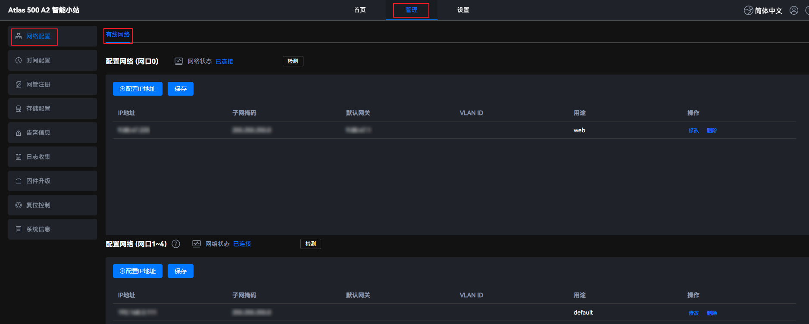
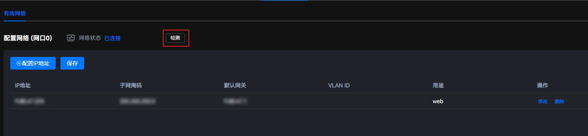
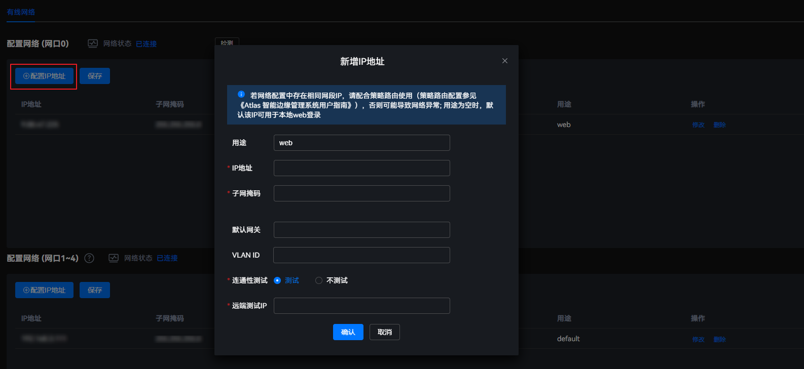
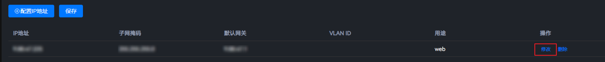
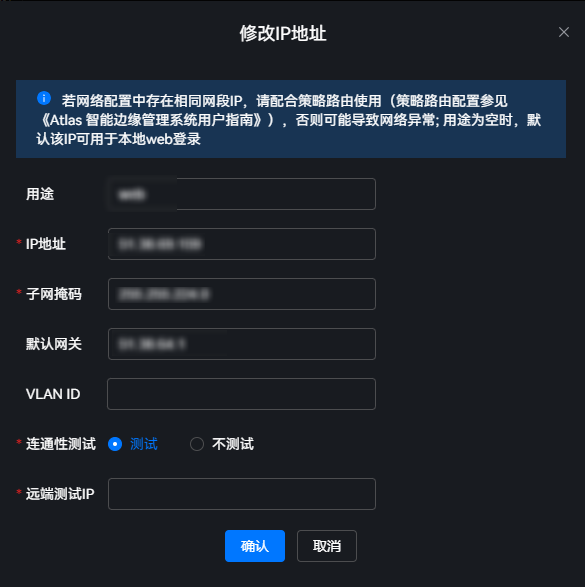
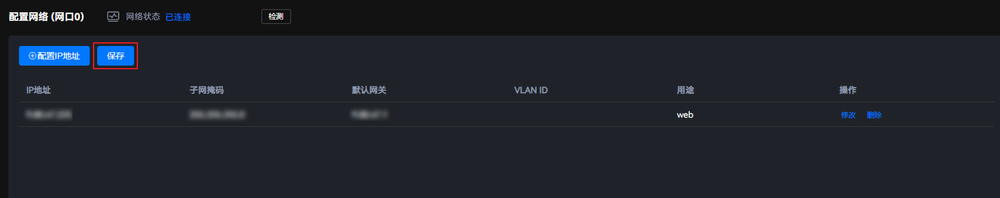

使用场景
在连接有线网络的情况下，新增、修改以及删除IP地址。
注意事项
- 进行网络配置时，请确保配置的IP地址正确，且与网络上的其它IP地址无冲突。不同网卡配置不同网段的IP地址，否则将导致网络异常。
- 进行网络配置时，如果两个网口连接在同一个局域网内，修改网络配置前，需要修改系统配置，否则可能导致同一服务器的两个网卡互相冲突。
- 通过SSH方式登录Atlas 500 A2 智能小站后端命令行界面。
- 执行vi /etc/sysctl.conf命令，在其中添加net.ipv4.conf.all.arp_ignore=1和net.ipv4.conf.all.arp_announce=2配置项，执行:wq命令保存并退出。
- 执行sysctl -p命令更新配置。
- 成功完成网络配置时，后台Nginx服务会重启，重启完成后新配置生效，功能恢复正常。在使用SmartKit工具进行网络配置时，相邻操作间需要增加时间间隔（建议间隔10秒以上）。
- 配置网口1~4的默认网关时，为了防止设备脱管，需要为网口0添加一个管理路由。执行route add -net <管理ip>/<子网掩码位数> gw <网口0的默认网关> 网口0命令进行添加。
检测有线网络
- 在主菜单中选择。图1 有线网络配置
 - 选择配置网络的网口，网口0或网口1~4。
- 网口0对应设备硬件的
 。
。 - 网口1~4对应设备硬件的网口1
 、网口2
、网口2 、网口3
、网口3 、网口4
、网口4 。
。
- 网口0对应设备硬件的
- 单击网络状态后的“检测”，检查网络的连接状态。

“检测网络状态”后的“已连接 1000Mb/s”为系统检测后的最新网络状态。
图2 检测网络

新增IP地址
- 在主菜单中选择。图3 有线网络配置

- 选择配置网络的网口，网口0或网口1~4。
- 网口0对应设备硬件的
 。
。 - 网口1~4对应设备硬件的网口1
 、网口2
、网口2 、网口3
、网口3 、网口4
、网口4 。
。
- 网口0对应设备硬件的
- 单击“配置IP地址”，弹出“新增IP地址”窗口。图4 新增IP地址
 - 参考表1，配置IP地址相关参数。
- 单击“确认”，保存配置信息。
- 单击“保存”使配置生效。图5 保存生效

修改IP地址

- 修改地址会导致网口相关业务中断，请谨慎操作。
- 修改IP属于高危操作，操作者需具备相应的网络知识，严格按照网络规划和操作指导书进行操作。
- 在主菜单中选择。图6 有线网络配置

- 选择配置网络的网口，网口0或网口1~4。
- 网口0对应设备硬件的
 。
。 - 网口1~4对应设备硬件的网口1
 、网口2
、网口2 、网口3
、网口3 、网口4
、网口4 。
。
- 网口0对应设备硬件的
- 单击待修改IP地址后的“修改”。图7 修改IP地址
 - 在弹出的“修改IP地址”窗口中，参考表1，修改IP地址。图8 修改IP地址
 - 单击“确认”，保存修改信息。
- 单击“保存”使配置生效。图9 保存生效

删除IP地址
- 删除操作不可恢复，请谨慎操作。
- 当网口仅存在一个IP地址时，此IP地址仅可修改，不可删除。
- 在主菜单中选择。图10 有线网络配置

- 选择配置网络的网口，网口0或网口1~4。
- 网口0对应设备硬件的
 。
。 - 网口1~4对应设备硬件的网口1
 、网口2
、网口2 、网口3
、网口3 、网口4
、网口4 。
。
- 网口0对应设备硬件的
- 单击待删除IP地址后的“删除”，弹出删除提示框。图11 删除操作

若删除配置IP地址区域下唯一的IP地址，会提示IP地址不能为空。
- 单击“确认”，删除该IP地址。
- 单击“保存”使配置生效。图12 保存生效

参数说明
参数名称 |
参数说明 |
|---|---|
用途 |
IP地址的用途。 字符串长度为1~32个字符，支持输入英文、数字和下划线。 说明：
|
IP地址 |
需要新增的IPv4地址，同一网口最多只能添加4个IP列表。若当前IP地址所属网段已存在于另一网卡配置中，如果继续配置，可能会出现异常。 |
子网掩码 |
该IP地址对应的子网掩码。 |
默认网关 |
该IP地址对应的默认网关。 说明：
请确保默认网关全局唯一，且不能在Web端删除唯一默认网关。 |
VLAN ID |
该IP地址对应的VLAN ID。 须知：
配置VLAN ID时，可能导致网络故障。请仔细考虑网络拓扑结构、VLAN ID的分配、VLAN ID隔离策略等因素，以确保网络的安全和性能。 |
连通性测试 |
表示是否对新增或修改的IP地址进行连通性测试：
默认需要对新增或修改的IP地址进行连通性测试，避免出现地址不可用导致设备脱管的情况，提高系统的可靠性。 |
远端测试IP |
用来对新增或修改的IP地址进行连通性测试的远端IP地址，当“连通性测试”参数选择“测试”时，才需要配置该参数。 |